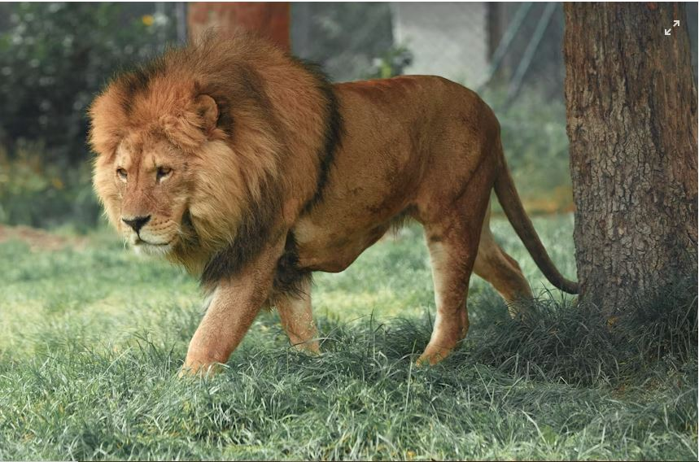

Popular Folklore Themes
The Clever Hare
Many stories feature the hare as intelligent and quick-thinking. The hare often defeats stronger animals through wit rather than force.
The Greedy Hyena
Hyena stories usually warn against greed, selfishness and foolish choices. These tales teach consequences through humour.

The Proud Lion
Lions often appear as symbols of strength and pride. Stories remind listeners that power without wisdom can fail.

Mystery & Belief
Some traditional tales speak of spirits, unusual signs, sacred places and warnings tied to nature.